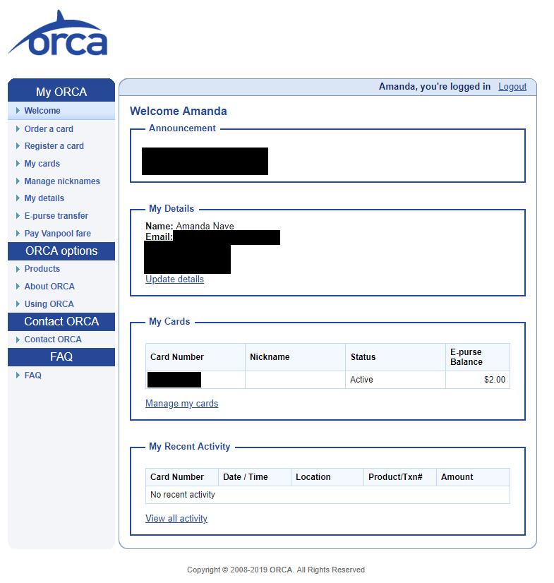
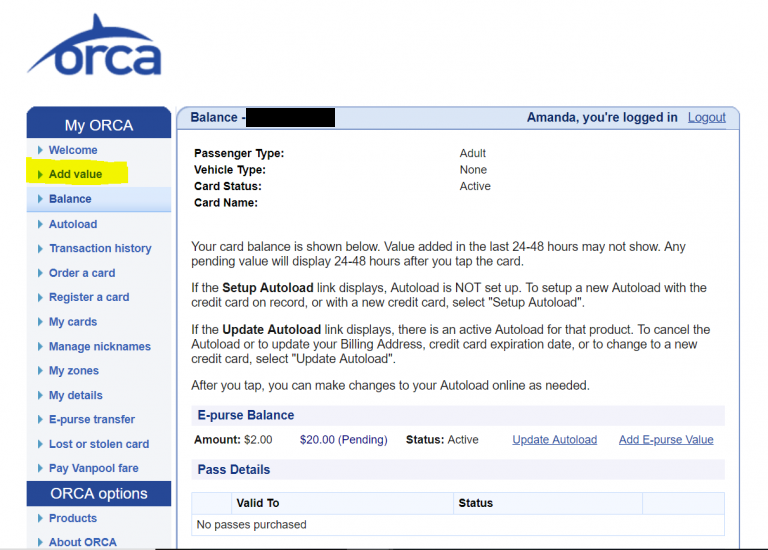

For this week’s analysis, I’ve chosen a site that I have to use about once a month, and each time pains me greatly. I give you, the ORCA Card site:
https://orcacard.com/ERG-Seattle/welcomePage.do
Those who are not familiar with the site, the ORCA Card is a way to pay for your bus, train and Vanpool fare throughout the Puget Sound Area and is managed on the ORCA Card website. Users can create a login and order a card, add funds to an existing card, or even give their card a nickname. Seems harmless from their homepage, right? Just wait until you login and try to reload the thing. So far the only thing I’ve found to be more time consuming than that is running around flipping couch cushions or raiding your little brother’s piggy bank for loose change (which I of course would never do).
This week I’ve chosen a shorter list of criteria to use so I can dive deeper into each topic:
- Is the site easy to navigate? Are the navigational elements clear?
- Is the site intuitive?
- Is the site easy to learn?
- Are the site features easy to use?
Are the navigational elements clear? Is the site easy to navigate?
I would say that the navigational elements are clear for the most part. After logging in, the user is presented with a very clean and basic interface. The main menu is located to the left of the page with titles that do make sense such as ‘Order a Card’ or ‘Register a Card’.

However, the main reason for using this site after you’ve ordered and registered your card is to be able to reload it so you can keep using it for your travels. Looking at the page, it is really difficult to be able to tell where you might do that. I feel like the site’s users would really benefit from a simple menu link that says ‘Reload your card’ or ‘Add funds to your card’. There is a ‘Pay Vanpool fare’ link at the bottom of the ‘My ORCA’ section of the menu, I don’t see a reason why adding a reload option would be an issue.
Is the site intuitive?
I will continue with my previous point of trying to reload your card. On the homepage there is no link to clue a user in where they may be able to do that, or any sort of instruction they may follow. In order to add funds to the card, a user must either click ‘E-Purse transfer’ or click their card number (I blocked mine out for privacy purposes). In my opinion, I think the term ‘E-purse’ is not very clear and somewhat misleading, and I would not pick the card number as the first place I’d go. However on the next page after you click your card number, there is a different menu which has an ‘Add value’ option. This would be a helpful link to have on the main page so the user doesn’t have to go searching for it.
Is the site easy to learn?
This site may become easy for those who login frequently to re-up their card. I prefer to add money about once per month and use it until the balance gets low. Because of this I’ve found its easy to forget where to go to reload and end up clicking around until I end up at the right spot. Another option I discovered while clicking around the site is to ‘Autoload’ your card, so once you run low on funds it will reload your card automatically to an amount you’ve specified to your account. Although the site does have a FAQ section that will tell you different ways to load your card, I think it would be much more helpful to have ‘how-to’ type links on the homepage, or more section names.
Are the features easy to use?
In my opinion, somewhat. I found the initial setup to be a little frustrating, but once you have your ORCA card linked and your credit card information saved it becomes quite a bit easier. However I do think there is plenty of room for improvement to make for a better and more enjoyable user experience. I would start by adding clearer menu options to the homepage (‘Reload Your Card Here’, ‘Setup Autoload Here’, ‘Add funds’, etc.) and doing away with terms such as ‘E-purse’. There also seems to be several steps to add your funds, I would prefer to see as a more simple way to do so and would love to see an app one day and a more web-app type interface for the overall website to make things more convenient for commuters.